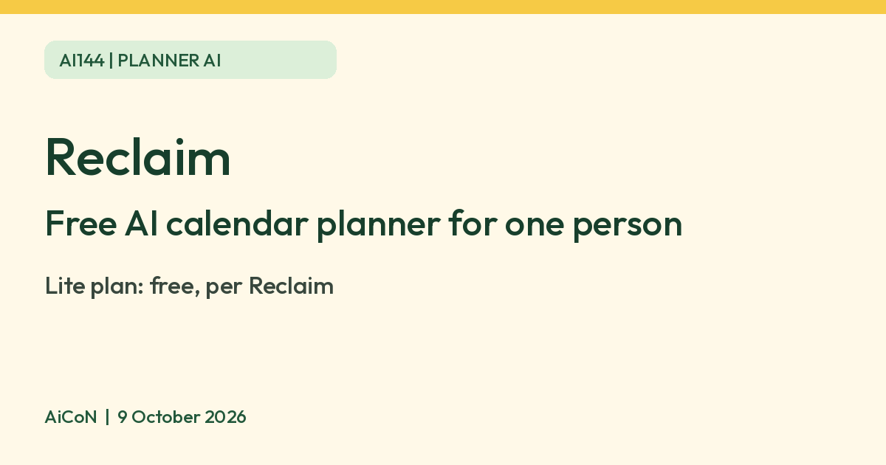

Reclaim: a free AI planner for your calendar
Reclaim is an AI calendar assistant. Its help page says the Lite plan is free for any single user. It places focus time, habits and breaks on your calendar. Paid plans add features and higher limits for individuals and teams.

What it is
Reclaim is an AI calendar assistant. Its pricing page lists "5 AI Agents" on the free plan, along with Focus Time, Habits, Buffer Time, Smart Meetings and Meeting Quality. In plain terms, it finds room on your calendar for your own work, routines and breaks, and moves them around when your day changes.
Is it free
Yes, for one person. Reclaim's help page says the Lite plan "is available for any single user at no cost". Its legacy plans page calls it a "100% free forever plan". Paid plans add features and higher limits for individuals and teams. Reclaim's pricing page lists Lite as a 1-user team with 1 calendar sync, 1 scheduling link and a 1-week scheduling range (except Scheduling Links). We do not quote paid prices here, because Reclaim's pages show them in US dollars and we could not confirm an Indian price.
How to try it
- Go to reclaim.ai and sign up for the free Lite plan.
- Connect your calendar. Reclaim's help page lists a Google Calendar and Gmail add-on and a Google Tasks integration. The current pricing page also lists Outlook Calendar support. Check the permissions before connecting either account.
- Add your habits and focus time, and let Reclaim place them around your meetings.
Limits to know
- Lite is one user only, with the limits listed above.
- It works on your calendar, so you are giving it access to your events. Read its privacy terms first.
- We found no official page on availability in India. We found no regional restriction either. Check that sign-up works for you.
- We did not test it ourselves.
Frequently asked questions
Do I need a team?
No. Lite is for a single user.
Does it cost anything to start?
Reclaim says the Lite plan is free forever for a single user.
Sources: Reclaim pricing, How Reclaim's pricing and plans work, Reclaim legacy plans. Checked 9 October 2026.